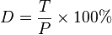
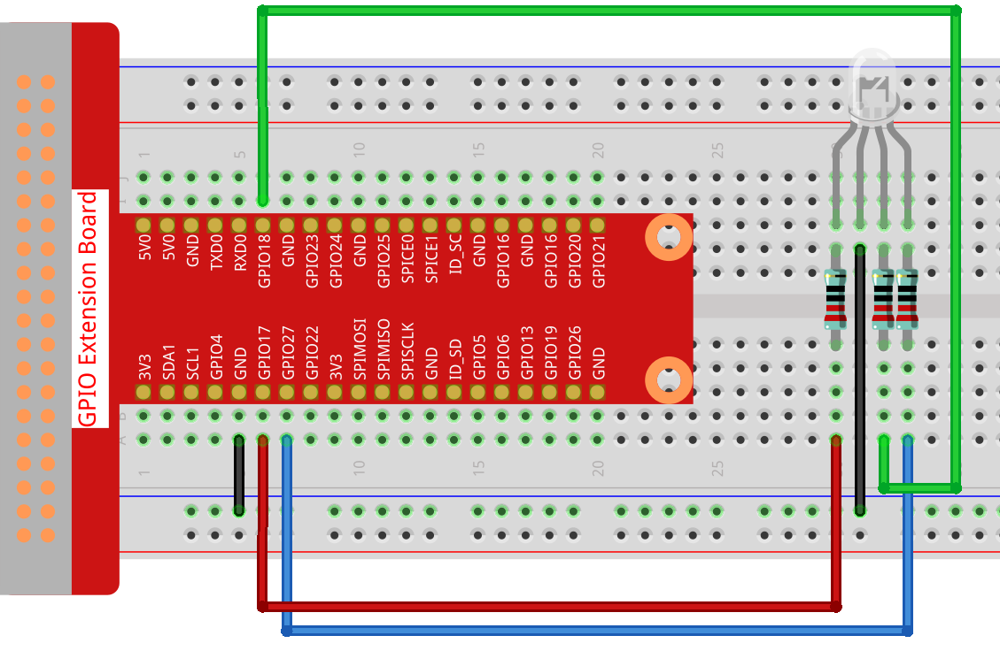

Nota
¡Hola! Bienvenido a la Comunidad de Entusiastas de SunFounder para Raspberry Pi, Arduino y ESP32 en Facebook. Profundiza en Raspberry Pi, Arduino y ESP32 junto a otros entusiastas.
¿Por qué unirte?
Soporte Experto: Resuelve problemas posventa y supera desafíos técnicos con la ayuda de nuestra comunidad y equipo.
Aprende y Comparte: Intercambia consejos y tutoriales para mejorar tus habilidades.
Acceso Exclusivo: Obtén acceso anticipado a anuncios de nuevos productos y adelantos.
Descuentos Especiales: Disfruta de descuentos exclusivos en nuestros productos más recientes.
Promociones Festivas y Sorteos: Participa en sorteos y promociones durante las festividades.
👉 ¿Listo para explorar y crear con nosotros? Haz clic en [Aquí] y únete hoy mismo.
1.1.2 RGB LED
Introducción
En esta lección, usaremos un LED RGB para hacerlo parpadear en varios colores.
Componentes

Principio
PWM
La Modulación por Ancho de Pulso (PWM) es una técnica para obtener resultados analógicos mediante medios digitales. El control digital crea una onda cuadrada, una señal que alterna entre encendido y apagado. Este patrón simula voltajes entre encendido total (5V) y apagado (0V) cambiando el tiempo que la señal permanece encendida respecto al tiempo que permanece apagada. El tiempo de «encendido» se llama ancho de pulso. Si repites este patrón rápido, por ejemplo en un LED, la señal parecerá ser un voltaje constante entre 0 y 5V que controla el brillo del LED.
Ciclo de Trabajo
Un ciclo de trabajo es el porcentaje de un período en el cual una señal está activa. Un período es el tiempo que tarda la señal en completar un ciclo de encendido y apagado. La fórmula del ciclo de trabajo es:
{kind=link}
Donde D es el ciclo de trabajo, T es el tiempo en que la señal está activa y P es el período total de la señal. Un ciclo de trabajo del 60% significa que la señal está activa el 60% del tiempo y apagada el 40%.

LED RGB

Los tres colores primarios del LED RGB pueden mezclarse para crear varios colores. El brillo de cada LED se puede ajustar con PWM. Raspberry Pi tiene solo un canal para salida PWM de hardware, pero para controlar un LED RGB se necesitan tres. La biblioteca softPwm simula PWM mediante programación, permitiéndonos controlar fácilmente el LED RGB por salida PWM en múltiples canales y mostrar diferentes colores.
Diagrama Esquemático
Después de conectar los pines R, G y B a una resistencia limitadora, conéctalos a GPIO17, GPIO18 y GPIO27, respectivamente. El pin más largo (GND) del LED va al GND de la Raspberry Pi. Al asignar distintos valores PWM a los tres pines, el LED RGB mostrará colores distintos.

Procedimientos Experimentales
Paso 1: Monta el circuito.
{kind=link}
Para Usuarios de C
Paso 2: Ve a la carpeta del código.
cd ~/davinci-kit-for-raspberry-pi/c/1.1.2/
Paso 3: Compila el código.
gcc 1.1.2_rgbLed.c -lwiringPi
Nota
Al ejecutar el comando «gcc», si no se usa «-o», el archivo ejecutable se nombrará «a.out».
Paso 4: Ejecuta el archivo compilado.
sudo ./a.out
Después de ejecutar el código, verás que el LED RGB muestra los colores rojo, verde, azul, amarillo, rosa y cian.
Nota
Si al ejecutar aparece un error como: "wiringPi.h: No such file or directory», consulta la sección: c code is not working?.
Código
#include <wiringPi.h>
#include <softPwm.h>
#include <stdio.h>
#define uchar unsigned char
#define LedPinRed 0
#define LedPinGreen 1
#define LedPinBlue 2
void ledInit(void){
softPwmCreate(LedPinRed, 0, 100);
softPwmCreate(LedPinGreen,0, 100);
softPwmCreate(LedPinBlue, 0, 100);
}
void ledColorSet(uchar r_val, uchar g_val, uchar b_val){
softPwmWrite(LedPinRed, r_val);
softPwmWrite(LedPinGreen, g_val);
softPwmWrite(LedPinBlue, b_val);
}
int main(void){
if(wiringPiSetup() == -1){ //si la inicialización de wiring falla, imprime mensaje en pantalla
printf("setup wiringPi failed !");
return 1;
}
ledInit();
while(1){
printf("Red\n");
ledColorSet(0xff,0x00,0x00); //rojo
delay(500);
printf("Green\n");
ledColorSet(0x00,0xff,0x00); //verde
delay(500);
printf("Blue\n");
ledColorSet(0x00,0x00,0xff); //azul
delay(500);
printf("Yellow\n");
ledColorSet(0xff,0xff,0x00); //amarillo
delay(500);
printf("Purple\n");
ledColorSet(0xff,0x00,0xff); //púrpura
delay(500);
printf("Cyan\n");
ledColorSet(0xc0,0xff,0x3e); //cian
delay(500);
}
return 0;
}
Explicación del Código
#include <softPwm.h>
Librería usada para realizar la función PWM en el software.
void ledInit(void){
softPwmCreate(LedPinRed, 0, 100);
softPwmCreate(LedPinGreen,0, 100);
softPwmCreate(LedPinBlue, 0, 100);
}
Esta función crea un pin PWM en el software y establece su periodo entre 0x100us-100x100us.
El prototipo de la función softPwmCreate(LedPinRed, 0, 100) es el siguiente:
int softPwmCreate(int pin,int initialValue,int pwmRange);
Parámetro pin: Cualquier pin GPIO de la Raspberry Pi puede configurarse como un pin PWM.
Parámetro initialValue: El ancho de pulso inicial es el valor de initialValue multiplicado por 100us.
Parámetro pwmRange: El periodo de PWM es pwmRange multiplicado por 100us.
void ledColorSet(uchar r_val, uchar g_val, uchar b_val){
softPwmWrite(LedPinRed, r_val);
softPwmWrite(LedPinGreen, g_val);
softPwmWrite(LedPinBlue, b_val);
}
Esta función configura los colores del LED usando RGB. El parámetro formal r_val representa la luminosidad del LED rojo, g_val la del verde y b_val la del azul.
El prototipo de la función softPwmWrite(LedPinBlue, b_val) es el siguiente:
void softPwmWrite (int pin, int value) ;
Parámetro pin: Cualquier pin GPIO de la Raspberry Pi puede configurarse como un pin PWM.
Parámetro Value: El ancho de pulso del PWM es el valor multiplicado por 100us. El valor debe ser menor que pwmRange definido previamente; si es mayor, se asignará el valor fijo pwmRange.
ledColorSet(0xff,0x00,0x00);
Llama a la función definida previamente. Escribe 0xff en LedPinRed y 0x00 en LedPinGreen y LedPinBlue. Solo el LED rojo se enciende tras ejecutar este código. Para iluminar LEDs en otros colores, solo ajusta los parámetros.
Para Usuarios de Python
Paso 2: Abre el archivo de código.
cd ~/davinci-kit-for-raspberry-pi/python
Paso 3: Ejecuta el código.
sudo python3 1.1.2_rgbLed.py
Después de ejecutar el código, verás que el LED RGB muestra rojo, verde, azul, amarillo, rosa y cian.
Código
Nota
Puedes Modificar/Restablecer/Copiar/Ejecutar/Detener el código a continuación. Antes de hacerlo, dirígete a la ruta del código fuente como davinci-kit-for-raspberry-pi/python.
import RPi.GPIO as GPIO
import time
# Configura una tabla de colores en hexadecimal
COLOR = [0xFF0000, 0x00FF00, 0x0000FF, 0xFFFF00, 0xFF00FF, 0x00FFFF]
# Configura los canales de los pines con un diccionario
pins = {'Red':17, 'Green':18, 'Blue':27}
def setup():
global p_R, p_G, p_B
# Establece el modo GPIO en numeración BCM
GPIO.setmode(GPIO.BCM)
# Configura todos los pines LedPin en modo de salida y nivel inicial alto (3.3v)
for i in pins:
GPIO.setup(pins[i], GPIO.OUT, initial=GPIO.HIGH)
# Configura todos los LEDs como canales PWM a 2 KHz de frecuencia
p_R = GPIO.PWM(pins['Red'], 2000)
p_G = GPIO.PWM(pins['Green'], 2000)
p_B = GPIO.PWM(pins['Blue'], 2000)
# Comienza todos con valor 0
p_R.start(0)
p_G.start(0)
p_B.start(0)
# Define una función MAP para mapear valores de 0~255 a 0~100
def MAP(x, in_min, in_max, out_min, out_max):
return (x - in_min) * (out_max - out_min) / (in_max - in_min) + out_min
# Define una función para configurar colores
# el color de entrada debe estar en hexadecimal
def setColor(color):
# Configura la luminosidad de los LEDs con el valor de color proporcionado.
R_val = (color & 0xFF0000) >> 16
G_val = (color & 0x00FF00) >> 8
B_val = (color & 0x0000FF) >> 0
# these three lines are used for analyzing the col variables
# assign the first two values of the hexadecimal to R, the middle two assigned to G
# assign the last two values to B, please refer to the shift operation of the hexadecimal for details.
# Mapea el valor de color de 0~255 a 0~100
R_val = MAP(R_val, 0, 255, 0, 100)
G_val = MAP(G_val, 0, 255, 0, 100)
B_val = MAP(B_val, 0, 255, 0, 100)
# Cambia los colores
p_R.ChangeDutyCycle(R_val)
p_G.ChangeDutyCycle(G_val)
p_B.ChangeDutyCycle(B_val)
print ("color_msg: R_val = %s, G_val = %s, B_val = %s"%(R_val, G_val, B_val))
def main():
while True:
for color in COLOR: # Asigna cada color en la lista COLOR y cambia el color del LED RGB mediante setColor()
setColor(color) # Cambia el color del LED RGB
time.sleep(0.5) # Establece un retardo de 0.5s después de cada cambio de color. Modificar este parámetro cambia la velocidad de cambio de color.
def destroy():
# Detén todos los canales PWM
p_R.stop()
p_G.stop()
p_B.stop()
# Libera los recursos
GPIO.cleanup()
# Si ejecutas este script directamente, haz:
if __name__ == '__main__':
setup()
try:
main()
# Cuando se presiona 'Ctrl+C', se ejecuta destroy()
except KeyboardInterrupt:
destroy()
Explicación del Código
p_R = GPIO.PWM(pins['Red'], 2000)
p_G = GPIO.PWM(pins['Green'], 2000)
p_B = GPIO.PWM(pins['Blue'], 2000)
p_R.start(0)
p_G.start(0)
p_B.start(0)
Llama a la función GPIO.PWM() para definir los pines Red, Green y Blue como pines PWM y establece la frecuencia de PWM en 2000 Hz. Luego usa la función Start() para fijar el ciclo de trabajo inicial en cero.
def MAP(x, in_min, in_max, out_min, out_max):
return (x - in_min) * (out_max - out_min) / (in_max - in_min) + out_min
Define una función MAP para asignar valores. Por ejemplo, si x=50, in_min=0, in_max=255, out_min=0 y out_max=100, después de la asignación, devuelve (50-0) * (100-0)/(255-0) +0=19.6, lo que significa que 50 en el rango 0-255 equivale a 19.6 en el rango 0-100.
def setColor(color):
R_val = (color & 0xFF0000) >> 16
G_val = (color & 0x00FF00) >> 8
B_val = (color & 0x0000FF) >> 0
Configura la luminosidad de los tres LEDs usando el valor de color ingresado; asigna los primeros dos dígitos hexadecimales a R_val, los dos del medio a G_val y los dos últimos a B_val. Por ejemplo, si color=0xFF00FF, entonces R_val=（0xFF00FF & 0xFF0000）>> 16 = 0xFF, G_val = 0x00 y B_val=0xFF.
R_val = MAP(R_val, 0, 255, 0, 100)
G_val = MAP(G_val, 0, 255, 0, 100)
B_val = MAP(B_val, 0, 255, 0, 100)
Utiliza la función map para asignar el valor de R, G, B en el rango de 0~255 a un ciclo de trabajo PWM entre 0 y 100.
p_R.ChangeDutyCycle(R_val)
p_G.ChangeDutyCycle(G_val)
p_B.ChangeDutyCycle(B_val)
Asigna el valor del ciclo de trabajo mapeado al canal PWM correspondiente para cambiar la luminosidad.
for color in COLOR:
setColor(color)
time.sleep(0.5)
Asigna cada elemento de la lista COLOR a la variable color respectivamente y cambia el color del LED RGB mediante la función setColor().
Imagen del Fenómeno